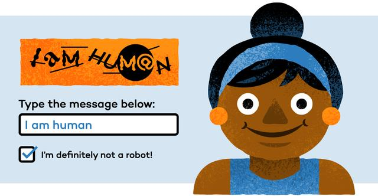
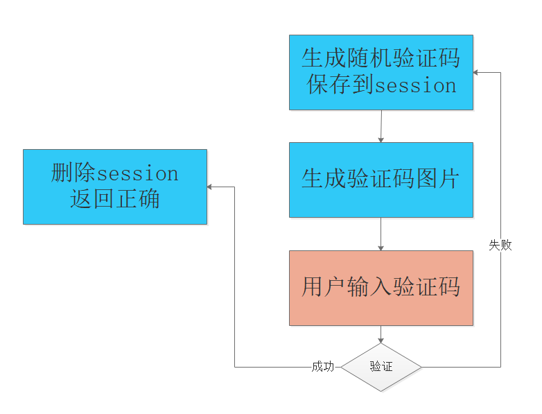
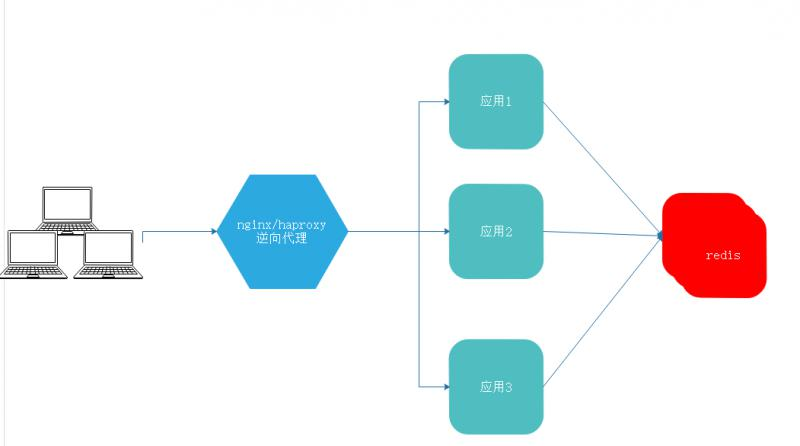
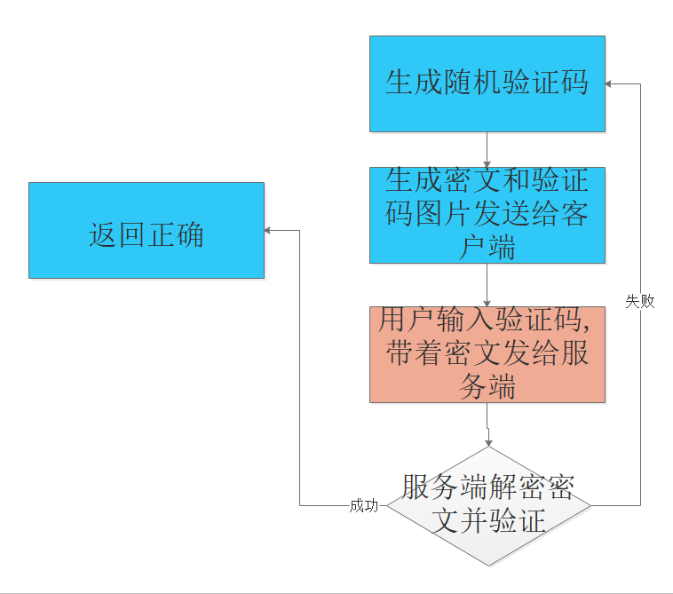

图文详解应用登录验证码的多种实现方案原文出处:本文由博客园博主字母哥博客提供。
原文连接:https://www.cnblogs.com/zimug/p/11955523.html

在本号的一系列Spring Security文章中，先后介绍了各种登录验证及授权中的知识点，如：spring-security简介并与shiro对比、 formLogin模式登录认证、动态数据登录验证与权限分配、账户多次登录失败锁定、RememberMe记住我功能，等等文章。笔者觉得以上的这些实际上都很简单，我们没有涉及到分布式应用。本节将以分布式的应用背景，讲解验证码实现的多种方式。本小节先从理论的角度为大家讲解，具体实现笔者还会再写。
- session存储验证码，不适用于分布式应用
- 共享session存储验证码，适用于分布式应用
- 基于对称算法的验证码，适用于分布式应用
一、验证码的组成部分
验证码实际上和谜语有点像，分为谜面和谜底。谜面通常是图片，谜底通常为文字。谜面用于展现，谜底用于校验。
- 对于字符型验证码。比如：谜面是显示字符串"ABGH"的图片，谜底是字符串"ABGH"
- 对于计算类验证码。比如：谜面是“1+1=”的图片，谜底是“2”
- 对于拖拽类的验证码。比如：谜面是一个拖拽式的拼图，谜底是拼图位置的坐标
总之，不管什么形式的谜面，最后用户的输入内容要和谜底进行验证。
二、session存储验证码
图中蓝色为服务端、澄粉色为客户端。

这是一种最典型的验证码实现方式，实现方式也比较简单。
- 应用服务端随机的生成验证码文字
- 将验证码文字存到session里面
- 根据验证码文字生成验证码图片，响应给客户端
- 检查用户输入的内容与验证码谜底是否一致
这种实现方式的优点就是比较简单，缺点就是：因为一套应用部署一个session，当我们把应用部署多套如：A、B、C，他们各自有一个session并且不共享。导致的结果就是验证码和图片由A生成，但是验证请求发送到了B，这样就不可能验证通过。
三、共享session存储验证码
在第二小节讲到的问题，实际上不是验证码的问题，而是如何保证session唯一性或共享性的问题。主要的解决方案有两种：

- 通常我们实现负载均衡应用的前端都是使用nginx或者haproxy，二者都可以配置负载均衡策略。其中一种策略就是：你的客户端ip上一次请求的是A应用，你的下一次请求还转发给A应用。这样就保证了session的唯一性。但是这种方式有可能会导致A、B、C应用其中一个或两个分配了大量的请求，而另外一个处理很少的请求，导致负载并不均衡。
- 另外一种非常通用的方式就是将分布式应用的session统一管理，也就是说原来A、B、C各自的session都存在自己的内存中，现在更改为统一存储到一个地方，大家一起用。这样就实现了session的唯一和共享，是实现分布式应用session管理的有效途径。在Spring框架内，最成熟的解决方案就是spring session + redis 。可自行参考实现。
四、基于对称算法的验证码
可能出于主机资源的考虑，可能出于系统架构的考量，有些应用是无状态的。
- 什么是无状态应用：就是不保存用户状态的应用。
- 什么是用户状态：比如当你登陆之后，在session中保存的用户的名称、组织等等信息。
- 所以可以简单的理解，无状态应用就是无session应用。当然这并不完全准确。
那么对于这些无状态的应用，我们就无法使用session，或者换个说法从团队开发规范上就不让使用session。那么我们的验证码该怎么做？

- 同样，首先要生成随机的验证码（谜底），但是不做任何存储操作
- 将谜底（验证码文字）加上时间串、应用信息等组成一个字符串进行加密。必须是对称加密，也就是说可以解密的加密算法。
- 生成验证码图片，并与加密后的密文，通过cookies一并返回给客户端。
- 当用户输入验证码提交登录之后，服务端解密cookies中的密文（主要是验证码文字），与用户的输入进行验证比对。
这种做法的缺陷是显而易见的：实际上就是将验证码文字在客户端服务端之间走了一遍。虽然是加密后的验证码文字，但是有加密就必须有解密，否则无法验证。所以更为稳妥的做法是为每一个用户生成密钥，并将密钥保存到数据库里面，在对应的阶段内调用密钥进行加密或者解密。
从密码学的角度讲，没有一种对称的加密算法是绝对安全的。所以更重要的是保护好你的密钥。正如没有一把锁头是绝对安全的，更重要的是保护好你的钥匙。
期待您的关注